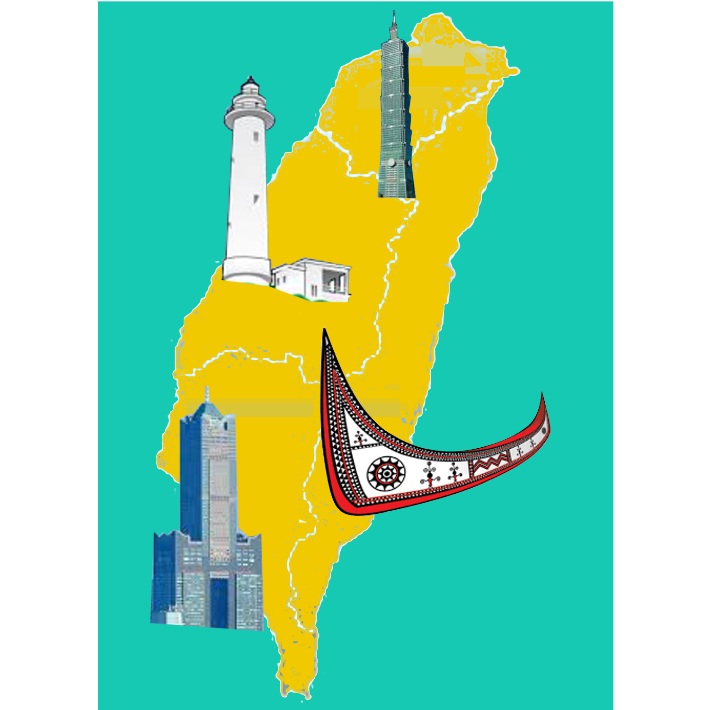
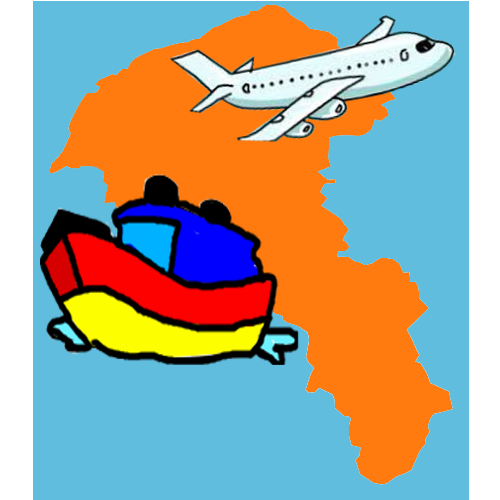
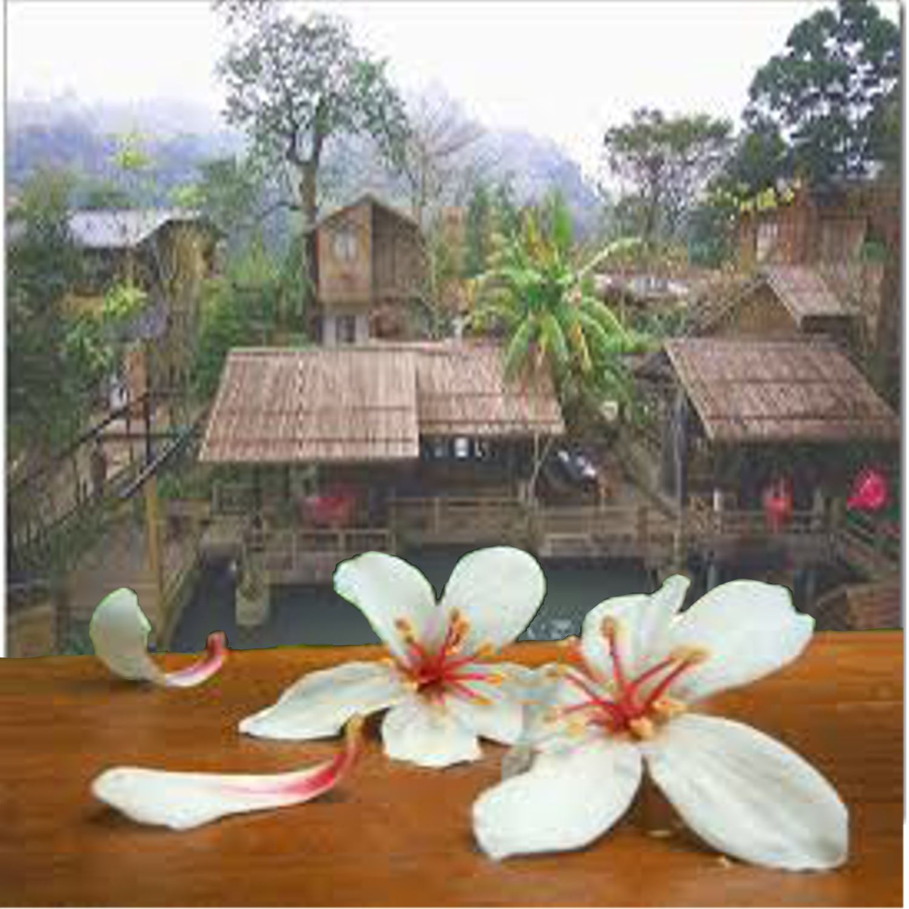
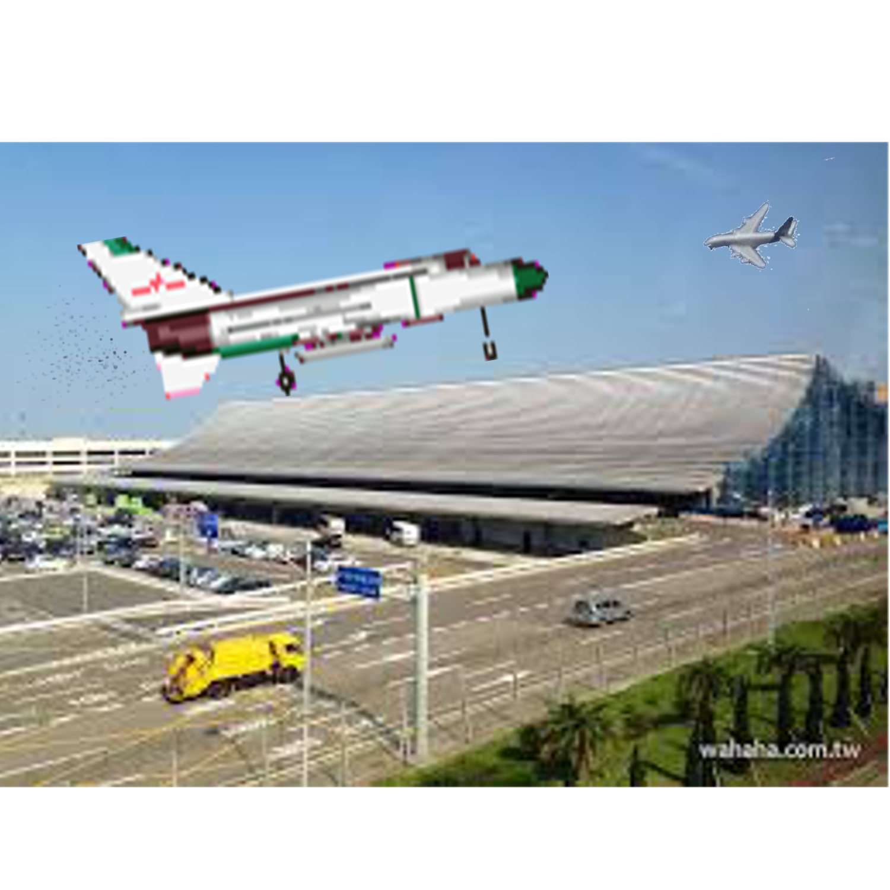
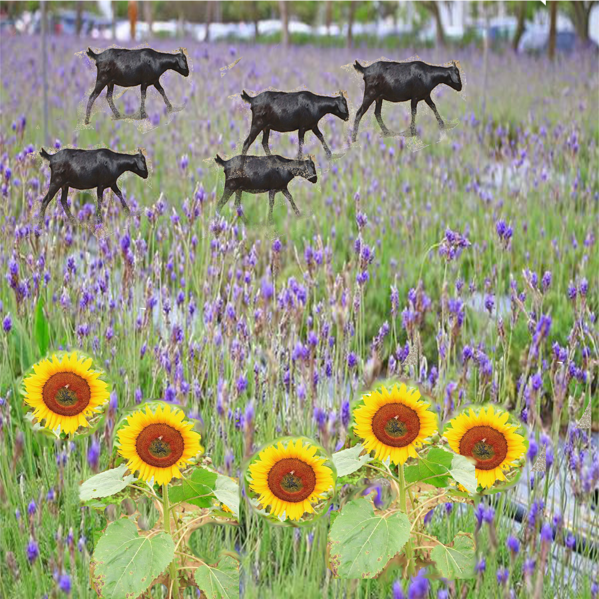
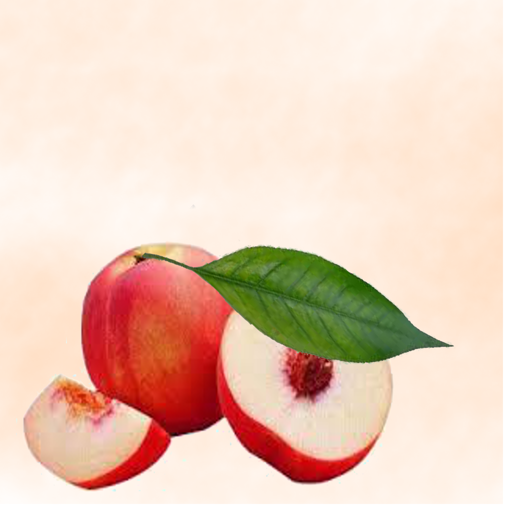
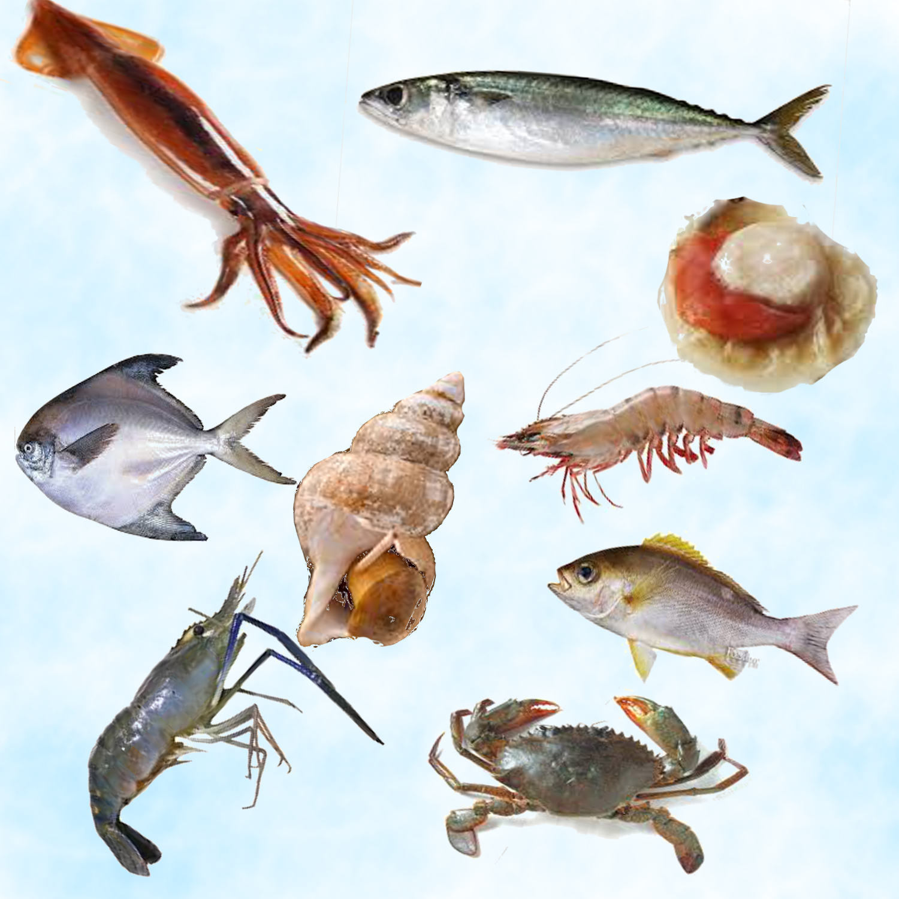
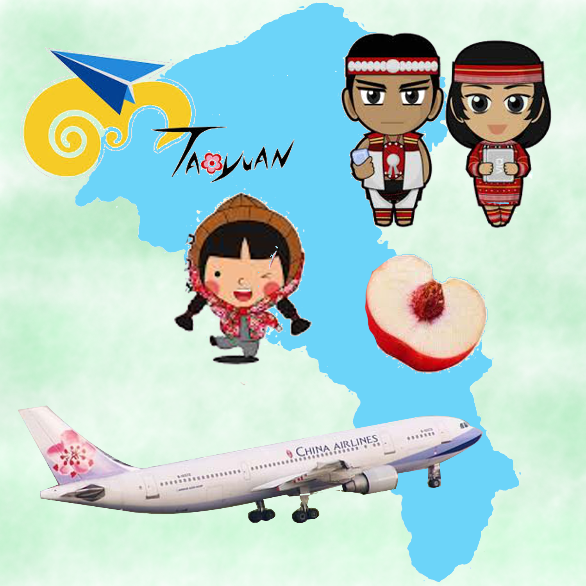

Media art final project Created by Ocean Kuo JAN.2.2018
Introduce my home town
Today, I am going to introduce the city where I grow up.

I live on a small island, Taiwan. It is next to China with friendly people and famous of beautiful natural sceneries.

Taoyuan City is a big city where I live. There are lots of mountains, Aboriginal villages, and long coastline.

Hakka is one of the Aboriginal peoples in Taoyuan city. The white flower, tung blossom, stand for the Hakka spirit.
There are over 20 night markets in Taoyuan. You can find all the traditional, special, and creative food or snacks and cloths in one of them To me, it is the best place to hang out with friends at night.

Taoyuan International Airport, the gate of Taiwan. This is the reason why Taoyuan is important.

In the countryside of Taoyuan City, run a sightseeing farm is a popular career for landowners. Hundreds of travelers not only come from different cities in Taiwan but different countries around the world.

Peach is the most famous fruit in Taoyuan, and we produce the most peaches in Taiwan, too. They usually grow in the mountains.

Taoyuan is a city beside the sea, therefore, we have a lot of fresh seafood in markets. Furthermore, we created different ways to cook seafood that make them taste better.
Hakkanese is the largest group of Aboriginal people in Taiwan. Therefore, their traditions have influence ours deeply.

If you are traveling in Taiwan, Taoyuan is a city that you must visit. You will have a lot of fun here!